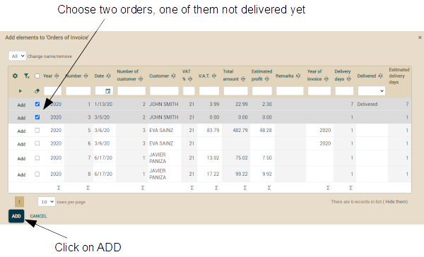
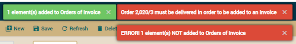

openxava
/ documentation /
Lesson 18: Validating with @EntityValidator
Course:
1.
Getting started |
2.
Basic domain model (1) |
3.
Basic domain model (2) |
4.
Refining the user interface |
5.
Agile development |
6.
Mapped superclass inheritance |
7.
Entity inheritance |
8.
View inheritance |
9.
Java properties |
10.
Calculated properties |
11.
@DefaultValueCalculator in collections |
12.
@Calculation and collections totals |
13.
@DefaultValueCalculator from file |
14.
Manual schema evolution |
15.
Multi user default value calculation |
16.
Synchronize persistent and computed propierties |
17. Logic from database |
18.
Advanced validation |
19.
Refining the standard behavior |
20.
Behavior & business logic |
21.
References & collections |
A.
Architecture & philosophy |
B.
Java Persistence API |
C.
Annotations |
D.
Automated testing
So far we have only done some basic validations using the
@Required
annotation. In this lesson you are going to learn to validate using the
anotation
@EntityValidator.
Our validation
We are going to enhance your code with this logic: if the orders are not
delivered yet, then the user cannot assign them to an invoice. That is,
only delivered orders can be associated with an invoice.
Adding
delivered property to Order
First you have to add a new property to the
Order entity. The
delivered
property:
@Column(columnDefinition="BOOLEAN DEFAULT FALSE")
boolean delivered;
Moreover it's necessary to add the
delivered property to
the view. Modify the
Order view as shown in the following code:
@View(extendsView="super.DEFAULT",
members=
"estimatedDeliveryDays, delivered," + // Add delivered
"invoice { invoice }"
)
...
public class Order extends CommercialDocument {
There is a new
delivered property now which indicates
the delivery state of an order. Try the new code and mark some of the
existing orders as delivered.
Validating
with @EntityValidator
Up to now the user can add any order to any invoice from the
Invoice
module, and he can associate a particular invoice with any order from the
Order module. We are going to restrict this: only delivered
orders are allowed to be added to an invoice.
The first alternative to implement this validation is by using an
@EntityValidator.
This annotation allows you to assign the desired validation logic to your
entity. Let's annotate the
Order entity as show in following
code:
@EntityValidator(
value=com.yourcompany.invoicing.validators.DeliveredToBeInInvoiceValidator.class, // The class with the validation logic
properties= {
@PropertyValue(name="year"), // The content of these properties
@PropertyValue(name="number"), // is moved from the 'Order' entity
@PropertyValue(name="invoice"), // to the validator before
@PropertyValue(name="delivered") // executing the validation
}
)
public class Order extends CommercialDocument {
Every time an
Order object is created or
modified an object of type
DeliveredToBeInInvoiceValidator is
created. Then its properties
year,
number,
invoice
and
delivered are initialized with the properties of the same
name from the
Order object. After that, the
validate()
method of the validator is executed. Let's write the validator code, first
create the
com.yourcompany.invoicing.validators package, then put
the next class inside:
package com.yourcompany.invoicing.validators; // In 'validators' package
import com.yourcompany.invoicing.model.*;
import org.openxava.util.*;
import org.openxava.validators.*;
import lombok.*;
@Getter @Setter
public class DeliveredToBeInInvoiceValidator
implements IValidator { // Must implement IValidator
int year; // Properties to be injected from Order
int number;
boolean delivered;
Invoice invoice;
public void validate(Messages errors) // The validation logic
throws Exception
{
if (invoice == null) return;
if (!delivered) {
errors.add( // By adding messages to errors the validation will fail
"order_must_be_delivered", // An id from i18n file
year, number); // Arguments for the message
}
}
}
The validation logic is absolutely straightforward: if an invoice
is present and this order is not marked as delivered we add an error
message, so the validation will fail. You should add the error message in
the
Invoicing/i18n/Invoicing-messages_en.properties file. As
shown below:
# Messages for the Invoicing application
order_must_be_delivered=Order {0}/{1} must be delivered in order to be added to an Invoice
Now you can try to add orders to an invoice with the application,
you will see how the undelivered orders are rejected. Go to
Invoices
module, select the ORDERS tab of an invoice, and from there click on
Add
button:
It will show a dialog with a list
of orders to choose from. Choose two, one of them not delivered yet, then
click on ADD:

Then the delivered order is added
and the other rejected, producing the next messages:
